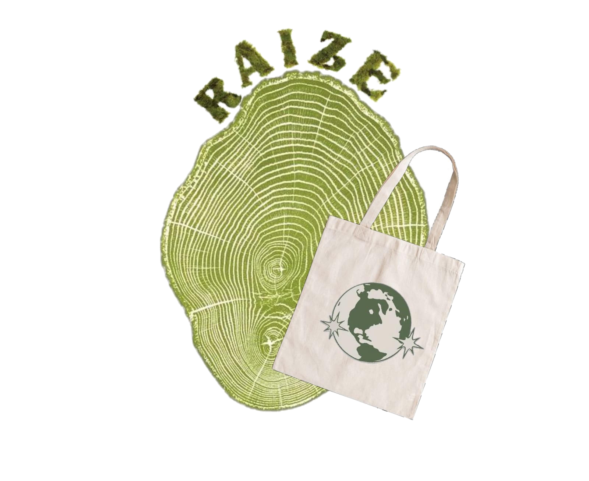

Bem-vindo ao site do grupo
JA do 1°STEM

Proposta da empresa
Nossa empresa consiste na produção de eco bags com materiais sustentáveis.Esses materiais são obtidos por meio de ações que permitem o recolhimento de plásticos.Após o recolhimento, os plásticos são encaminhados para nossa fábrica, onde passam por processos de seleção, limpeza, separação e transformação, para que possam ser reutilizados na produção das ecobags.
Posteriormente, nossa equipe de arte realiza pinturas e personalizações nas ecobags, utilizando desenhos, frases e mensagens que abordam diferentes questões sociais. As artes buscam provocar reflexões sobre temas como desigualdade social, racismo, preconceito, consumismo e preservação ambiental. Assim, cada sacola se torna não apenas um produto sustentável, mas também uma forma de expressão artística e conscientização.
Nosso propósito é incentivar hábitos mais sustentáveis, promover a reflexão sobre problemas presentes na sociedade e mostrar que pequenas atitudes podem gerar impactos positivos tanto para o meio ambiente quanto para a comunidade.
Projetos
Projeto do ecoponto inteligente
O projeto consiste em substituir lixeiras comuns das cidades e colocar lixeiras inteligentes que façam a separação do que é reciclável, por meio de sensores pré-programados para reconhecimento de plásticos.
Esses materiais recicláveis são enviados para uma fábrica de Eco Bags. Essas empresas que produzem essas sacolas buscariam fazer críiticas sociais por meio de artes pintadas nas bolsas, como forma de conscientização.
Esse projeto tem o objetivo de contribuir para a preservação ambiental, por meio da separação inteligente de resíduos. Dessa forma diminuindo a quantidade de materiais que seriam descartados incorretamente e destinando-os para produção de ecobags sustentáveis.
Projeto de ampliação de limpeza do sistema de drenagem urbana
O projeto é criar uma parceria com o governo para limpeza do sistema de drenagem urbana.
A parceria envolveria empresas de reciclagem para junto como o governo, promover a destinação de materiais recicláveis para empresas produtoras de Eco Bags.
O projeto tem o objetivo de retirar resíduos recicláveis do sistema de drenagem urbana. Ao retirar esses materiais do sistema, é evitado que eles sejam direcionados a grandes corpos de água, como rios e oceanos. Ao reduzir a quantidade de lixo nos rios e oceanos, os índices de poluicão e concentração de microplásticos também regridem.
Benefícios e Malefícios das Ecobags
Produzir eco bags com materiais recicláveis, que sejam sustentáveis e que busquem fazer críticas sociais por meio de artes pintadas nas sacolas.
Benefícios
- Redução do consumo de sacolas plásticas descartáveis.
- Incentiva a reutilização de materiais.
- Preservação de recursos naturais.
- Incentivam hábitos de consumo consciente e sustentável.
- Alta durabilidade e versatilidade em comparação com sacolas plásticas convencionais.
- Estímulo à economia circular, incentivando a reciclagem e o reaproveitamento de materiais.
Malefícios
- Alto custo de produção em comparação com sacolas plásticas convencionais.
- Por muitas Ecobags serem distribuídas como brindes e vendidas por um baixo custo, é comum que as pessoas possuam várias ecobags, e isso anula o princípio do consumo consciente.
- Pelo material ser um tipo de tecido, possui mais aglomerações de bactérias e sujeira o geral.
Integrantes e Turma
Turma: 1°STEM
- Gabriel Siqueira
- Guilherme Miranda
- Letícia Vaz
- Lorena Vitória
- Melissa Mesquita
- Miguel Lucena
- Milena Justino
- Yago Couto